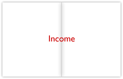
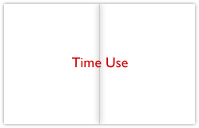
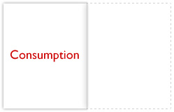

The Initial Strategy
Dykman decided he had to open the piece with a candid acknowledgment of the population milestone—a spread on America’s 300 million people. Although he personally found demographic data “dry” and not especially surprising, he thought it could be interesting to portray how the population was distributed across the nation, the ethnic groups to which they belonged, and immigrants’ countries of origin. That would leave him four other spreads which he could devote to his unofficial agenda: puncturing myths that influenced Americans’ perceptions of themselves.
Income, for example, was an indispensable part of American life. Yet Dykman suspected that not many readers were aware just how much money the wealthiest citizens controlled. An illustration of US income distribution would allow him to make that abundantly clear. So he decided to include an income spread. The religion spread also rose quickly to the top of his list. The recent Baylor Religion Survey was not only timely, but offered a unique perspective on a much-discussed issue. He would start with a graphic on the survey results.
With three topics—population, income, and religion—chosen, Dykman stopped briefly to consider the tone of the piece. Should it be upbeat, educational, sober? Ultimately, he applied his own quirky criterion: “They can’t all be depressing. Health care’s depressing. Education is kind of depressing. Crime is really depressing. Religion is depressing depending on your point of view.”
So with only two spreads left to fill, he regretfully discarded his ideas for displays about healthcare, education, and crime. Instead, he decided to pursue a graphic display fashioned from the Bureau of Labor Statistics’ time use data. Finally, he thought he would offer readers what he called a “dessert course”—a single page about what Americans buy. In his view, it would be a lighthearted way to conclude the piece. He could include amusing trivia, such as how many jars of Peter Pan® Lite Chunky Peanut Butter Wal-Mart sold in a given day.
By the end of his first week on the project, Dykman had a strategy for how to arrange his 10 pages:
- He would begin with a single-page text introduction. Though Editor-at-Large Gibbs was on leave to write a book, she had expressed interest in composing an opening to Dykman’s piece.
- A two-page demographics spread would be the first set of graphics. It would tie the entire package to the population milestone.
- Another two-pager would illustrate the “four ways of viewing God” described in the Baylor Religion Survey.
- A spread on earnings would demonstrate the income distribution of US residents.
- A time use graphic would examine how the average American divided the day among leisure, work, sleep, chores, childcare, and numerous other activities.
- Finally, a concluding page on consumption would depict what Americans buy and how much.
|  | |
|  |  |
But this was only a general plan. Now Dykman would have to oversee the research.